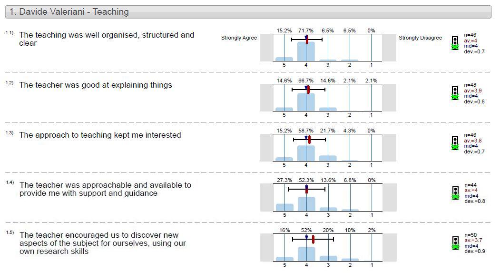

I am an Associate Fellow of the UK's Higher Education Academy (UKPSF D1 level).
In academic year 2017/18, I have taught the module
CE320 - Large Scale Software System and Extreme Programming together with
Dr Ana Matran-Fernandez,
where we covered the topics of agile software development, extreme programming, unit testing and version control systems. My teaching skills evaluations are below.
During my PhD, I have also worked as Graduate Laboratory Assistant at the University of Essex in the following modules:
-
CE881 - Mobile & Social Application Programming
2015/2016 2014/2015
-
CE320 - Large Scale Software System and Extreme Programming
2015/2016
2014/2015
2013/2014
-
CE204 - Data Structures and Algorithms
2014/2015
2013/2014
-
CE101 - Professional Development
2014/2015
2013/2014
-
CE151 - Introduction to Programming
2014/2015
-
MA105 - Applied Mathematics
2014/2015
During my Master degree, I have worked as a Laboratory Assistant at the University of Parma in the following modules:
-
Fondamenti di Informatica e Laboratorio di Programmazione (C++ Programming)
2012/2013
-
Calcolatori Elettronici (Computer Architectures)
2011/2012
Mentoring
I have had the honor of mentoring:
- Thrusha Puttaraju, high-school student of Harvard Summer School's class Becoming a Brain Scientist: Neuroscience and Psychology Research
- Mariam Tigane, high-school student of Harvard Summer School's class Becoming a Brain Scientist: Neuroscience and Psychology Research
- Jessica Yatvitskiy, high-school student who spent Summer 2019 in the Simonyan lab
- Alice Agnoletto, undergraduate student from the University of Parma who did her thesis at Essex
I have also volunteered in the following program to inspire next-generation scientists:
Teaching Skills Assessment
The Students' Assessment of Modules and Teaching (SAMT) scores for my lectures of the CE320 module at the University of Essex are shown below:
